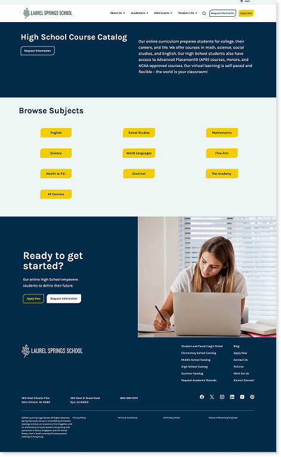
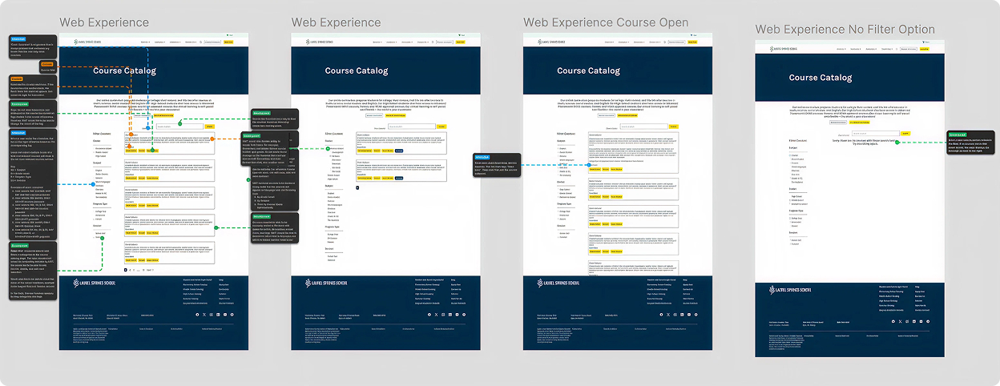
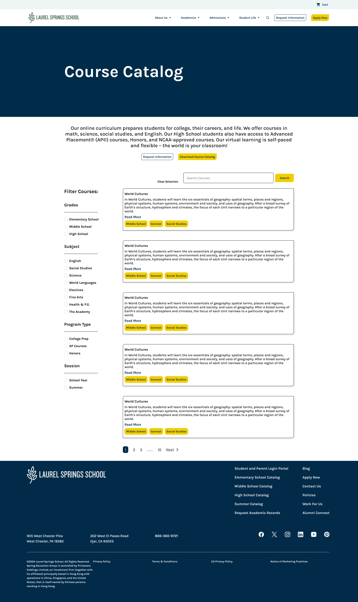
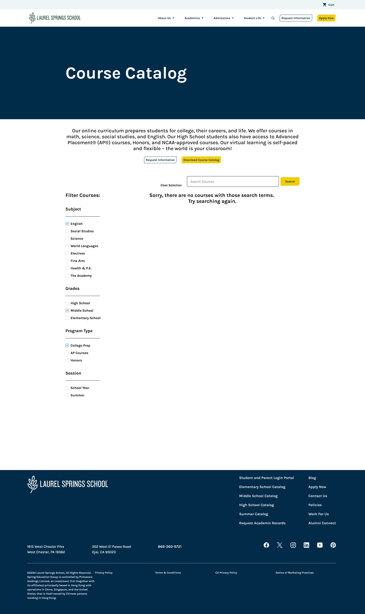
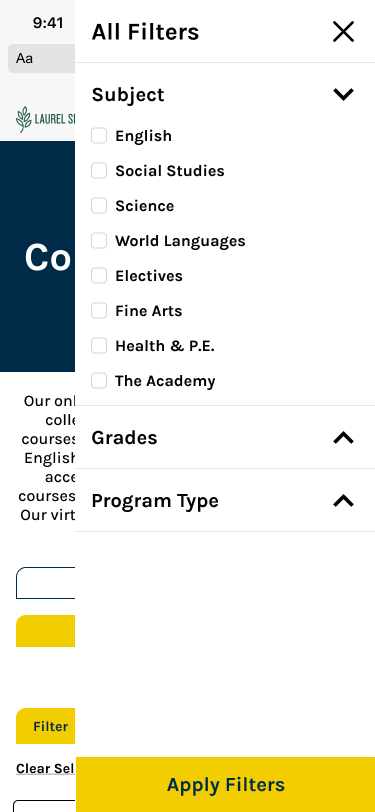
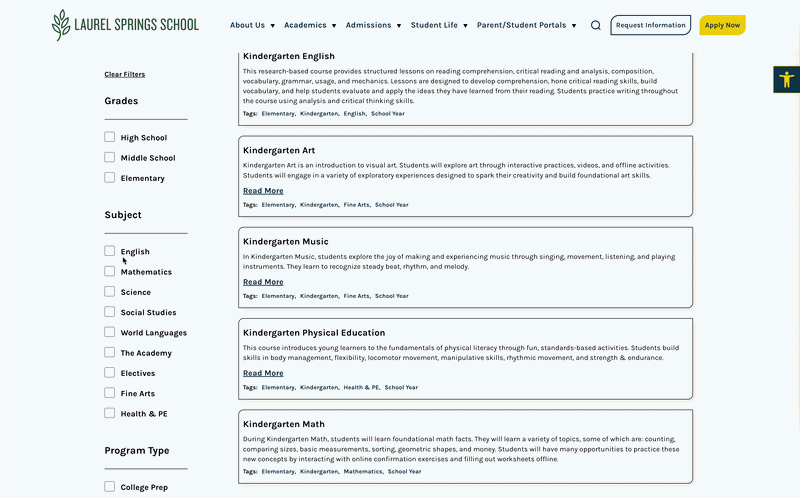

Laurel
Springs.
Transforming a difficult experience into a centralized, user-friendly catalog. The new catalog is now a top navigation item and has become one of the Top 5 most visited landing pages on the site.

From scattered PDFs to a centralized catalog.
Laurel Springs School's course catalog experience was difficult to navigate, and not optimized for modern user expectations, especially on mobile. Courses were buried within individual grade level pages and nested inside dropdown menus, making it difficult for prospective families and students to explore offerings holistically.
I led the UX design of a new, centralized course catalog experience that improved discoverability, streamlined navigation, and created a scalable foundation for future growth. The new catalog was launched within two months and has since become one of the Top 5 most visited landing pages on the site, significantly increasing course visibility and engagement.
View Live Site ↗A catalog families couldn't use.
The existing course catalog experience created significant usability and discoverability challenges.
This structure created several key issues:
- Courses were difficult to discover unless users navigated multiple levels deep
- Users could not easily browse or explore courses across grade levels
- The experience required excessive clicking and interaction
- Content was especially difficult to navigate on mobile devices
- The structure did not support exploratory behavior, which is critical for prospective families
As a result, the catalog did not effectively support users in understanding the breadth and value of Laurel Springs' academic offerings.

- Quickly find courses by grade, subject, or keyword
- Compare course details to make informed enrollment decisions
- Access the catalog from any device, anywhere
- Reduce support inquiries related to course information
- Increase catalog page engagement and time on site
- Drive more qualified inquiries to the admissions team
Understanding the landscape.
To inform the redesign, I conducted a competitive analysis of course catalogs from other online private schools and educational institutions.
I evaluated how competitors structured their catalogs, focusing on:
- Information architecture and organization models
- Filtering and categorization systems
- Course discoverability
- Mobile usability and responsiveness
- Scanning efficiency and content hierarchy
Across competitor experiences, several patterns emerged:
- Courses were centralized in a single, dedicated catalog
- Filtering allowed users to refine by grade level, subject, or category
- Card-based layouts improved scannability
- Users could browse without navigating through multiple layers
- Mobile experiences prioritized vertical scrolling and simplified interaction
Building a clear path.
I redesigned the catalog structure to consolidate all courses into one centralized experience, accessible directly from the main navigation. This eliminated the need for users to navigate through multiple grade-level pages and made the catalog a primary entry point.
Aligned to the brand.
I designed a card-based layout that allowed users to quickly scan available courses and understand key information at a glance. Filtering functionality enabled users to narrow results based on relevant criteria, improving efficiency and usability.
The experience was designed mobile-first, ensuring usability and clarity across all screen sizes.
Shipped to production.
I collaborated closely with the development team through build, QA, and launch — flagging issues, validating interactions, and ensuring the implemented experience matched the design intent.

From pixels to production.
The delivered catalog brought all course information into a single, searchable experience with consistent structure across all grade levels.



A catalog families actually use.
The existing course catalog experience created significant usability and discoverability challenges.
The final solution included:
- A centralized course catalog accessible from top-level navigation
- A scannable, structured layout for easy browsing
- A responsive design optimized for mobile and desktop
- A scalable framework supporting future course additions
The experience significantly reduced friction and made academic exploration more intuitive.

What we achieved.
The catalog became one of the top 5 most visited pages on the entire site — moving from invisible to a core navigation destination within weeks of launch.
What I learned.
This project reinforced the importance of:
- Evaluating existing usability issues before designing solutions
- Leveraging competitive analysis to inform UX decisions
- Iterating collaboratively with developers
- Ensuring quality through UX-focused QA
It also demonstrated how structural improvements to information architecture can significantly improve user engagement and discoverability.